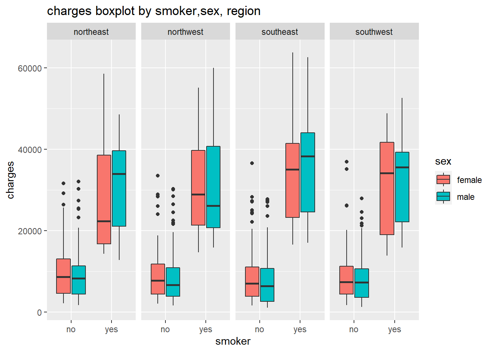
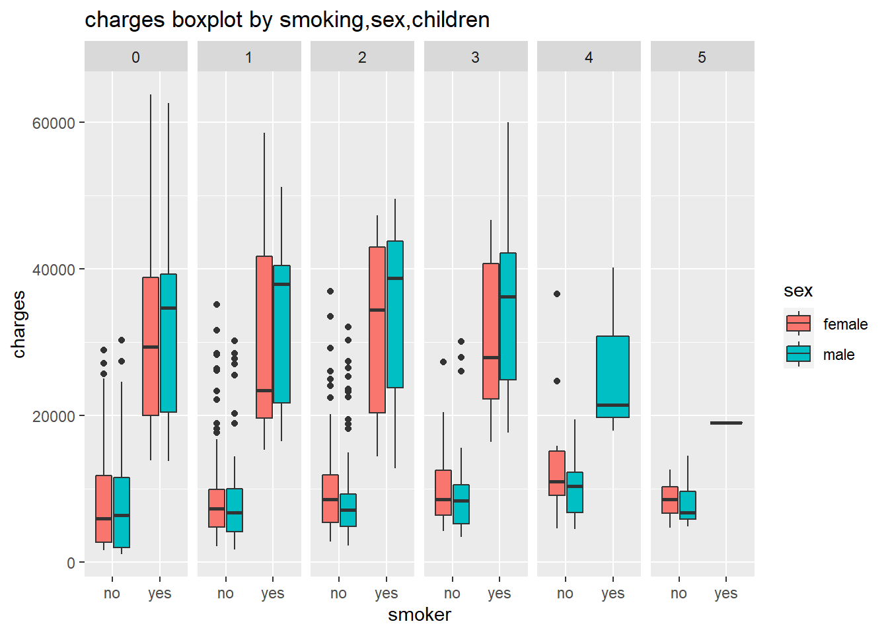
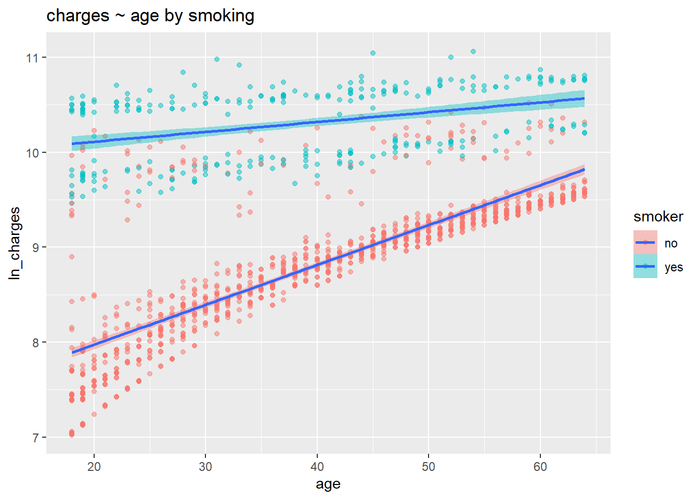

Health Insurance Prediction
Using Machine Learning methods to predict health insurance with Kaggle dataset Medical Cost Personal Dataset
Below is the r code and outputs for this project.
1.1 Summary the data
| female (n=662) |
male (n=676) |
Overall (n=1338) |
|
|---|---|---|---|
| age | |||
| Mean (SD) | 39.5 (14.1) | 38.9 (14.1) | 39.2 (14.0) |
| Median [Min, Max] | 40.0 [18.0, 64.0] | 39.0 [18.0, 64.0] | 39.0 [18.0, 64.0] |
| bmi | |||
| Mean (SD) | 30.4 (6.05) | 30.9 (6.14) | 30.7 (6.10) |
| Median [Min, Max] | 30.1 [16.8, 48.1] | 30.7 [16.0, 53.1] | 30.4 [16.0, 53.1] |
| charges | |||
| Mean (SD) | 12600 (11100) | 14000 (13000) | 13300 (12100) |
| Median [Min, Max] | 9410 [1610, 63800] | 9370 [1120, 62600] | 9380 [1120, 63800] |
| children | |||
| Mean (SD) | 1.07 (1.19) | 1.12 (1.22) | 1.09 (1.21) |
| Median [Min, Max] | 1.00 [0.00, 5.00] | 1.00 [0.00, 5.00] | 1.00 [0.00, 5.00] |
| region | |||
| northeast | 161 (24.3%) | 163 (24.1%) | 324 (24.2%) |
| northwest | 164 (24.8%) | 161 (23.8%) | 325 (24.3%) |
| southeast | 175 (26.4%) | 189 (28.0%) | 364 (27.2%) |
| southwest | 162 (24.5%) | 163 (24.1%) | 325 (24.3%) |
| smoker | |||
| no | 547 (82.6%) | 517 (76.5%) | 1064 (79.5%) |
| yes | 115 (17.4%) | 159 (23.5%) | 274 (20.5%) |
1.2 Check distribution of continuous variables
## Registered S3 method overwritten by 'GGally':
## method from
## +.gg ggplot2Charges is not normal. Age & charges, Ages & bmi have linear trend.
1.3 Check correlation
Charges and smoker has great correlation.
1.4 Boxplot for categorical variables

We can see that charges between different sex/children/region doesn’t differ much, but smoker has significantly greater charge than non-smoker.
1.5 Scatter plot for continuous variables

First we transform the charges to help discovering trends in scatter plot. Through 1.4, we find that smoker is the only categorical variable affecting charges, so we take smoker as group. From scatter plot, we can see charges increase when bmi and age increase.
2.1 Comparing models
GBM is the best model, with low RMSE, RAE and high R-square.
2.2 Gradient Boosting Model
| shrinkage | interaction.depth | n.minobsinnode | n.trees | RMSE | Rsquared | MAE | RMSESD | RsquaredSD | MAESD | |
|---|---|---|---|---|---|---|---|---|---|---|
| 1 | 0.1 | 1 | 10 | 50 | 6202.871 | 0.7470729 | 4344.856 | 466.0288 | 0.0361775 | 233.6819 |
| 4 | 0.1 | 2 | 10 | 50 | 4575.118 | 0.8583197 | 2684.192 | 550.3909 | 0.0367435 | 249.6802 |
| 7 | 0.1 | 3 | 10 | 50 | 4496.837 | 0.8611048 | 2543.797 | 547.2287 | 0.0365041 | 221.2431 |
| 2 | 0.1 | 1 | 10 | 100 | 6010.974 | 0.7556568 | 4244.440 | 431.1665 | 0.0365351 | 212.8096 |
| 5 | 0.1 | 2 | 10 | 100 | 4488.067 | 0.8610988 | 2501.074 | 554.1310 | 0.0365671 | 230.1176 |
| 8 | 0.1 | 3 | 10 | 100 | 4505.104 | 0.8598198 | 2497.941 | 537.7534 | 0.0360447 | 232.0640 |
| 3 | 0.1 | 1 | 10 | 150 | 6016.216 | 0.7549992 | 4274.771 | 428.4892 | 0.0366560 | 219.9383 |
| 6 | 0.1 | 2 | 10 | 150 | 4484.331 | 0.8610549 | 2464.148 | 546.0455 | 0.0359785 | 232.0796 |
| 9 | 0.1 | 3 | 10 | 150 | 4536.843 | 0.8577026 | 2513.076 | 534.6219 | 0.0362243 | 247.5379 |
| n.trees | interaction.depth | shrinkage | n.minobsinnode | |
|---|---|---|---|---|
| 6 | 150 | 2 | 0.1 | 10 |

## var rel.inf
## smokeryes smokeryes 69.14964303
## bmi bmi 16.51329971
## age age 12.74887643
## children children 1.09206572
## regionsouthwest regionsouthwest 0.18552035
## regionsoutheast regionsoutheast 0.15771228
## sexmale sexmale 0.10379114
## regionnorthwest regionnorthwest 0.049091342.3 Decision Tree
Best Tree depth is 4. In 80% nonsmokers, elder tend to have higher charges; In 20% smokers, people with higher bmi tends to have higher charges.
2.4 Black-box

The most important variable is smoker. The less important variables are age and bmi. Region, children and sex contribute minimally to charges.
Created by Jun Zhai with R